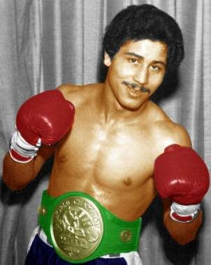

Wilfredo Gómez, born in 1956 in Puerto Rico, made his professional boxing debut in 1974 at the age of 18. With a style characterized by aggression, devastating power, and exceptional skill, Gómez quickly made a name for himself in the super bantamweight division. His early success set the stage for a career that would make him one of the most feared punchers in boxing history.
One of Gómez's early career-defining moments came when he faced Rodolfo Gato González in 1976. In a hard-fought battle, Gómez displayed his raw power and boxing intelligence to secure a win and establish himself as one of the rising stars in the super bantamweight division.
In 1984, Gómez faced off against Juan LaPorte in a battle for the WBC Featherweight title. Gómez's skill and power were on full display as he dominated LaPorte, showing why he was one of the most feared fighters in the world during his prime.
Wilfredo Gómez was one of the most dominant and feared fighters in the 1970s and 1980s. He became a world champion in the super bantamweight division, holding the WBC title for several years. Known for his exceptional punching power and precision, Gómez became a household name in Puerto Rico and the boxing world.
Despite his immense success, Wilfredo Gómez faced several challenges throughout his career. His most notable loss came against Salvador Sánchez in 1981, where Gómez suffered his first defeat. Sánchez's superior technique and ring IQ overcame Gómez's power, marking a pivotal moment in his career. Gómez also faced struggles outside the ring, dealing with personal issues that affected his later years in boxing.
